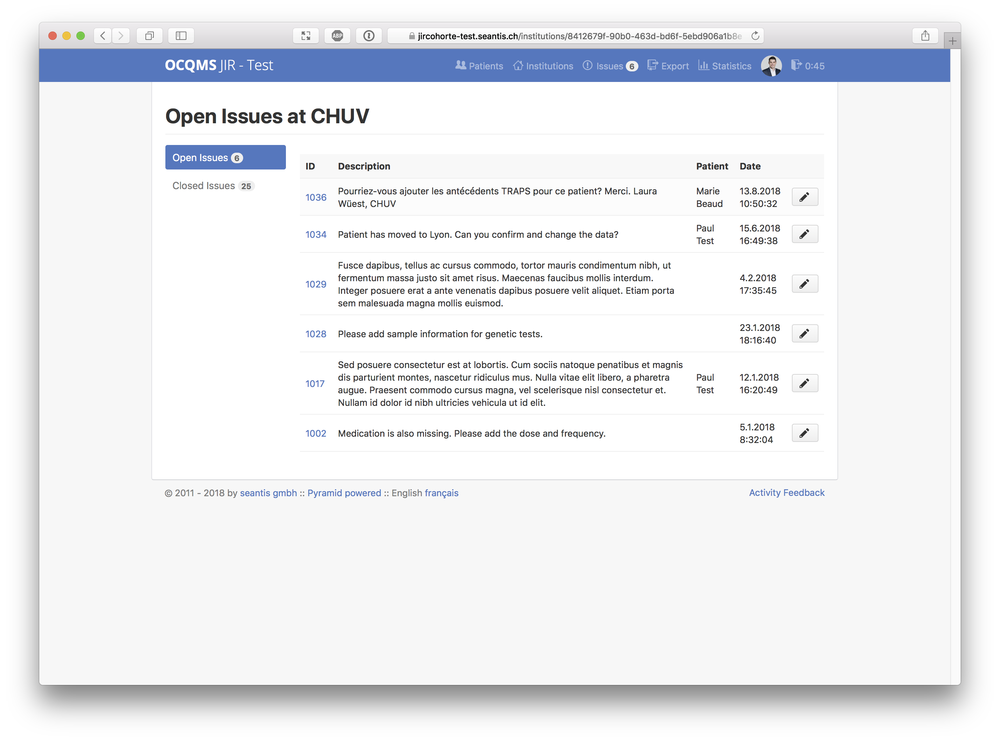
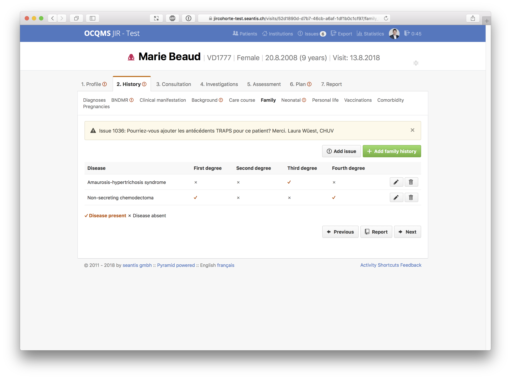

04.09.2018
Verbesserung der Datenqualität in medizinischen Studien
Mit dem neuen 'Issue Tracker' werden die Tools zur Überprüfung und zur Qualitätskontrolle von medizinischen Daten direkt in die HealthData.ai Plattform integriert.
Aufgabe
Um in medizischen Forschungsprojekten die Datenqualität sicherzustellen, müssen die Daten auf Abweichungen von den erwarteten Dateneingaben bzw. auf fehlende Datenpunkte überprüft werden.
Umsetzung
'Issues' werden bei abweichenden, unklaren oder fehlenden Daten durch 'Data Monitors' eröffnet. Andere Benutzer sehen eine Übersicht und den Status der 'Issues', die von ihnen erfasste Daten betreffen.

Benutzer mit der Rolle 'Data Monitor' können neue 'Issues' erfassen. Diese Benutzer sehen dabei keine sensitiven personenbezogenen Daten wie Patientennamen. Erfasste 'Issues' werden durch das medizinische Fachpersonal bearbeitet und nach der Beantwortung geschlossen. Der 'Data Monitor' hat stets den Überblick über die offenen 'Issues' und deren Status.
Kundennutzen
Die Daten müssen nicht länger in externe Listen und zurück in die Datenplattform überführt werden. Damit verbessert der 'Issue Tracker' die Datenqualität da der Prozess der Datenüberprüfung bedeutend weniger fehleranfällig ist.

Links
- HealthData.ai: www.healthdata.ai
- Fondation rhumatismes-enfants-suisse: www.fondationres.org
- CHUV - Centre hospitalier universitaire vaudois: www.chuv.ch